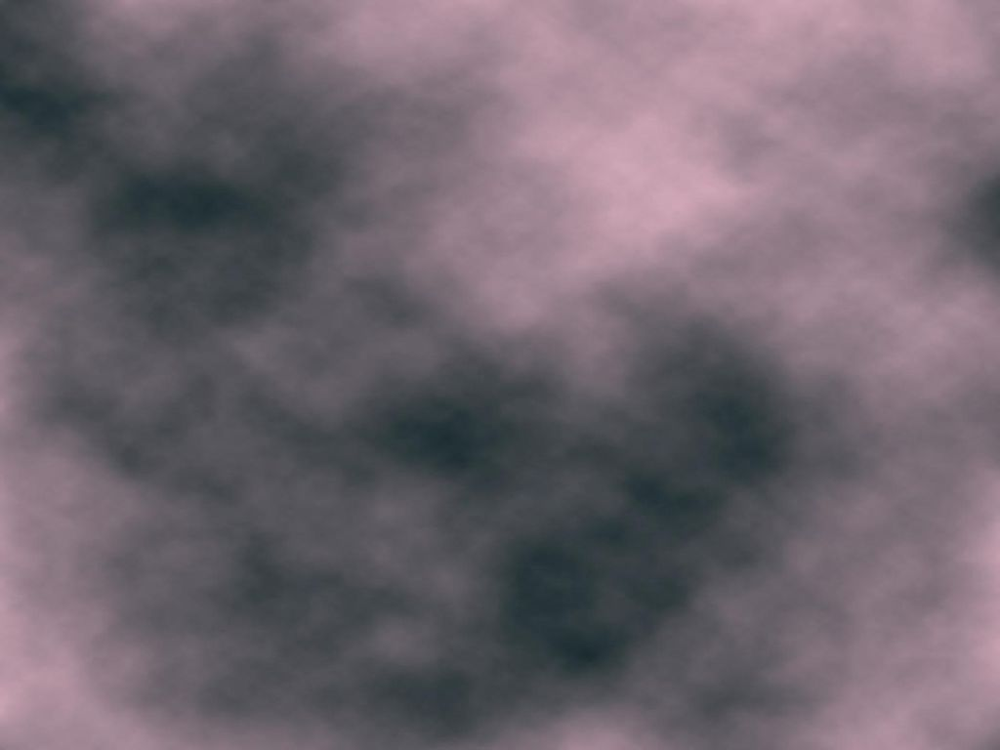

Maurizio Tomasi (maurizio.tomasi@unimi.it)
28 Marzo 2025
These are the equations used by Jeans: \begin{aligned} \dot\rho + \vec{\nabla}\bigl(\rho\,\vec{v}\bigr) &= 0\quad&\text{(mass conservation)} \\ \dot{\vec{v}} + (\vec{v}\cdot\nabla)\vec{v} &= -\frac1{\rho} \vec{\nabla}p - \vec{\nabla}\phi &\text{(Newton's law)} \\ p &= \rho c_s^2&\text{(speed of sound)} \\ \nabla^2\phi &= 4\pi G \rho&\text{(gravitation)}. \end{aligned}
The unknowns \rho, \vec{v}, p and \phi are functions of the point \vec{r} and time t. For a monoatomic ideal gas, c_s = \sqrt{\gamma\frac{k_B T}{m}}, with \gamma = \frac53.
The system of equations is very complex to solve without some simplification.
We linearize the system, substituting \begin{aligned} \rho(\vec{r}, t) &= \textcolor{#682673}{\rho_0} + \textcolor{#267342}{\rho_1}(\vec{r}, t), \\ p(\vec{r}, t) &= \textcolor{#682673}{p_0} + \textcolor{#267342}{p_1}(\vec{r}, t), \\ \vec{v}(\vec{r}, t) &= \textcolor{#682673}{\vec{v}_0} + \textcolor{#267342}{\vec{v}_1}(\vec{r}, t) = 0 + \vec{v}_1(\vec{r}, t), \\ \phi(\vec{r}, t) &= \textcolor{#682673}{\phi_0} + \textcolor{#267342}{\phi_1}(\vec{r}, t). \end{aligned} The terms \textcolor{#682673}{\rho_0}, \textcolor{#682673}{p_0}, \textcolor{#682673}{\vec{v}_0} and \textcolor{#682673}{\phi_0} are constant, and \textcolor{#682673}{\rho_0} \gg \textcolor{#267342}{\rho_1}, \textcolor{#682673}{p_0} \gg \textcolor{#267342}{p_1}, etc.
Suppose that a portion of plasma has this density:

We are imposing that the density variations \textcolor{#267342}{\rho_1} are small compared to the average density \textcolor{#682673}{\rho_0}.
Ignoring higher-order terms, we have that, for example, the term -\vec{\nabla} p/\rho becomes \begin{aligned} -\frac1\rho\vec{\nabla} p &= -\frac{\vec{\nabla}\textcolor{#267342}{p_1}}{\textcolor{#682673}{\rho_0} + \textcolor{#267342}{\rho_1}} \approx -\frac{\vec{\nabla}\textcolor{#267342}{p_1}}{\textcolor{#682673}{\rho_0}} \left(1 - \frac{\textcolor{#267342}{\rho_1}}{\textcolor{#682673}{\rho_0}}\right) = \\ &= -\frac{\vec{\nabla}\textcolor{#267342}{p_1}}{\textcolor{#682673}{\rho_0}} + \frac{\textcolor{#267342}{\rho_1}}{\textcolor{#682673}{\rho_0}^2}\vec{\nabla} \textcolor{#267342}{p_1} \approx -\frac{\vec{\nabla}\textcolor{#267342}{p_1}}{\textcolor{#682673}{\rho_0}}. \end{aligned} The remaining terms are simpler.
Applying a divergence to the so-called «Newton’s law» and substituting, we obtain \ddot{\textcolor{#267342}{\rho_1}} - c_s^2 \nabla^2\textcolor{#267342}{\rho_1} + 4\pi G \textcolor{#267342}{\rho_1} \textcolor{#682673}{\rho_0} = 0.
The equation is complex to solve, but it is linear: if \rho_A and \rho_B are two solutions, then \alpha \rho_A + \beta \rho_B is also a solution.
We exploit the linearity of the equation to solve it using Fourier analysis. We therefore decompose the unknown into plane waves: \textcolor{#267342}{\rho_1}(\vec{r}, t) = \iiint_{\mathbb{R}^3}\text{d}\vec{k}\int_\mathbb{R}\text{d}\omega\,\tilde{\textcolor{#267342}{\rho_1}} (\vec{k}, \omega)\,e^{i(\vec{k}\cdot\vec{r} - \omega t)}.
The function \tilde{\textcolor{#267342}{\rho_1}}(\vec{k}, \omega) is the Fourier transform of \textcolor{#267342}{\rho_1}(\vec{r}, t); therefore differential operations on \textcolor{#267342}{\rho_1} become algebraic on \tilde{\textcolor{#267342}{\rho_1}}: \nabla^2 \textcolor{#267342}{\rho_1} \rightarrow k^2 \cdot \tilde{\textcolor{#267342}{\rho_1}}, \qquad \partial_t \textcolor{#267342}{\rho_1} \rightarrow \omega \cdot \tilde{\textcolor{#267342}{\rho_1}}.
Recalling that \left\|\vec{k}\right\| = \frac{2\pi}\lambda, \quad \omega = 2\pi\nu, the value of \lambda that appears in the expression of \textcolor{#267342}{\rho_1} corresponds each time to a different scale of the perturbations in the image:
Therefore, applying the Fourier transform to the equation of \textcolor{#267342}{\rho_1}, we obtain \omega^2 \cdot \tilde{\textcolor{#267342}{\rho_1}} = \bigl(k^2 c_s^2 - 4\pi G \textcolor{#682673}{\rho_0}\bigr)\cdot \tilde{\textcolor{#267342}{\rho_1}}, that is \omega^2 = k^2 c_s^2 - 4\pi G \textcolor{#682673}{\rho_0}, which is called the dispersion relation and links \omega and k (i.e., \lambda and \nu).
Solving, we have that \omega = \pm c_s \sqrt{k^2 - k_J^2}, with k_J^2 \equiv \frac{4\pi G \textcolor{#682673}{\rho_0}}{c_s^2}. (in the absence of gravity, k_J = 0 and \omega = \pm c_S \,k: the speed of sound is always c_s).
From the study of this equation, we deduce how the system evolves over time.
If k_J^2 < k^2 then the pressure wave propagates in the medium (acoustic wave) with a phase velocity given by v_f = \lambda\nu = \frac\omega{k} = c_s \sqrt{1 - \left(\frac{k_J}k\right)^2}, lower than the speed of sound c_s because k_J \not= 0 (it is the term due to gravity). Gravity therefore «slows down» the propagation of the wave in the medium.
If k_J^2 > k^2 then \omega is imaginary, and \textcolor{#267342}{\rho_1}(\vec{r}, t) = A_g e^{i(\vec{k}\cdot\vec{r} - \omega t)} diverges as e^{t/\tau_J} (collapse), with \tau_J = \frac1{k_J c_s} = \frac1{\sqrt{4\pi G \textcolor{#682673}{\rho_0}}} = \frac{2.3\times 10^4\,\text{yr}}{\sqrt{n_H/10^6\,\text{cm}^{-3}}}, if k\ll k_J; a result similar to the free-fall time: \tau_\text{ff} = \sqrt{\frac{3\pi}{32 G\textcolor{#682673}{\rho_0}}} = \frac{4.4\times 10^4\,\text{yr}}{\sqrt{n_H/10^6\,\text{cm}^{-3}}}.
Since the collapse occurs if k_J^2 > k^2, that is \frac{4\pi G \textcolor{#682673}{\rho_0}}{c_s^2} > \left(\frac{2\pi}{\lambda}\right)^2, we then obtain the expression for R_J: \lambda > c_s \sqrt{\frac\pi{G \textcolor{#682673}{\rho_0}}} \equiv R_J.
For a monatomic gas we have R_J = \sqrt{\frac{5\pi k_B T}{3 G m \textcolor{#682673}{\rho_0}}}.
From the density \textcolor{#682673}{\rho_0} and the Jeans radius R_J we can estimate the minimum mass to cause a gravitational collapse with M_J = \frac43 \pi R_J^3 \textcolor{#682673}{\rho_0} = \frac{4\pi}{3\sqrt{\textcolor{#682673}{\rho_0}}} \left(\frac{5\pi k_B T}{3 G m}\right)^{\frac32} \propto \sqrt{\frac{T^3}{\textcolor{#682673}{\rho_0}}} («Jeans mass»).
Numerically, it holds that M_J \approx 0.32\,M_\odot\left(\frac{T}{10\,\text{K}}\right)^{\frac32} \left(\frac{m_H}{\mu}\right)^{\frac32}\left(\frac{n_0}{10^6\,\text{cm}^3}\right)^{-\frac12} with \mu average molecular weight.
The values of n and T in the equation are quite in line with those of the clouds in the ISM: this is reassuring!
We mentioned a physical problem in Jeans’ calculations. The point is that it is unrealistic to assume that \nabla\textcolor{#682673}{\phi_0} = 0 because then \nabla^2\textcolor{#682673}{\phi_0} = 0 \quad\Rightarrow\quad 4\pi G \textcolor{#682673}{\rho_0} = 0.
Without the assumption \nabla\phi = 0, the calculations become more complicated, but the result does not change qualitatively.
The correct solution, however, depends on the details of the geometry of the cloud.
When very massive clouds begin to collapse, the physical parameters change, and so does M_J.
In some cases, it may happen that some regions of the cloud lose stability and begin to collapse in turn. A fragmentation of the cloud occurs, with the formation of multiple stars.
This is the likely mechanism for the formation of open clusters.
In general, a collapsing cloud will also have angular momentum, which we have neglected.
If angular momentum is conserved during contraction, then: \frac25 M R^2 \omega = \frac25 M R_0^2 \omega_0, (the moment of inertia is I=\frac25 M R^2 for a solid sphere) from which \omega = \omega_0 \left(\frac{R_0}R\right)^2.
At the equator, the acceleration is a(R) = G\frac{M(R)}{R^2} - \omega^2 R = G\frac{M(R)}{R^2} - \omega_0^2 \left(\frac{R_0}R\right)^4 R.
The rotation will stop the collapse when a(R) = 0, i.e., G M(R) = (\omega_0 R_0)^2 \frac{R_0^2}R, which occurs when \frac{R}{R_0} = \frac{(\omega_0 R_0)^2 R_0}{G M(R)}.
For typical values of \omega_0 R_0 = 1\,\text{km/s} = 10^5\,\text{cm/s} and of M_J and R_J, it holds that \frac{R}{R_0} \approx 0.6.
Therefore, when the radius has reduced by half, the rotation slows the collapse in the direction \perp to the axis of rotation.
In the direction parallel to the axis, the collapse can continue undisturbed. The cloud flattens and forms a disk, where much of the mass does not reach the center and does not form the star.
Let’s estimate the Jeans radius (R_J \propto \sqrt{T/\rho}) in two distinct cases:
We have that \frac{R_\text{J, HI}}{R_\text{J, H$_2$}} \sim 2\sqrt{\frac{100\,\text{K}}{10\,\text{K}}\,\frac{10^3\,\text{cm}^{-3}}{1\,\text{cm}^{-3}}} = 200.
It is therefore easier to form stars in molecular clouds.
The collapse releases gravitational energy which can:
In the second case, the contraction is isothermal. (This was Jeans’ hypothesis, from which, in the case of small oscillations, the relation p = \rho c_s^2 that we used last time is derived).
But the increase in \rho corresponds to an increase in the optical depth of the cloud, and at some point the collapse ceases to be isothermal, becoming adiabatic: T V^{\gamma - 1} = \text{constant} \quad\Rightarrow\quad T \propto \frac1{V^{\gamma - 1}} \propto \rho^{\gamma - 1}.
Consequently, M_J \propto \sqrt{\frac{T^3}\rho} \propto \sqrt{\rho^{3\gamma - 4}}.
M_J \propto \sqrt{\rho^{3\gamma - 4}}.
If γ > 4/3 (e.g., ideal gas), M_J increases as density increases, and therefore the collapse could stop before nuclear reactions are triggered inside the star.
When this happens, the Jeans mass for a 10² K cloud is about 0.2 M_\odot: therefore the process allows the formation of a series of masses of the order of the solar mass, but not much lower.
If in the adiabatic regime the energy is not released outside the cloud, where does it go?
Partly it is used to increase the temperature T, partly to photoionize the neutral species (H, He, H₂).
This determines the path of the protostar on the HR diagram.
Numerical model of the collapse from a cloud to a protostar M \sim 1\,M_\odot.
As already mentioned, to identify H₂ regions we can use CO as a tracer:
We have seen that the dust temperature is of the order of 100 K if it is close enough to a young star.
In gas clouds, the shielding of the outer regions can allow the existence of colder inner regions. Temperatures of ~10 K are reached, with densities n \sim 10^{4\div5}\,\text{cm}^{-3}.
These regions are also likely sites of star formation (remember that M_J \propto T^{3/2}).
At the center of Barnard 68 («Black cloud») there is a cold core.
A massive star emits in the visible and in the UV.
Since to ionize HI it takes E = h\nu > 13.6\,\text{eV} (\lambda < 91.2\,\text{nm}), OB stars have the ability to ionize HI.
When most of the hydrogen is ionized, we speak of HII regions.
OB stars are able to ionize HI only in a region of limited volume. Let’s estimate the size of this volume.
The ionization rate is R_i = N_\text{UV}, with [R_i] = \text{ionizations/s} and N_\text{UV} = \int_{13.6\,\text{eV}}^\infty N(\nu)\,\text{d}\nu (N_\text{UV} = \text{photons/s}, if efficiency is 100%).
The efficiency is likely 100%, because for ionization the cross section is \sigma \sim 10^{-17}\,\text{cm}^2.
For densities n_H \sim 10^3\,\text{cm}^{-3} the mean free path of a photon is \lambda \sim \frac1{n_H\,\sigma} \sim 10^{14}\,\text{cm} = 6\,\text{AU}, to be compared with the size of HII regions (from 0.1 to 100 pc).
The recombination rate is R_\text{rec} = \alpha(T)\,n_e\,n_p\,V = \alpha(T)\,n_p^2\,\frac{4\pi}3 r_S^3, with r_S called the Strömgren radius and \alpha(T) the coefficient.
At equilibrium R_i = R_\text{rec}, from which r_S = \left(\frac3{4\pi\alpha}\right)^{\frac13} N_\text{UV}^{\frac13} n_p^{-\frac23}. Denser HII regions are smaller (typically, \sim 20\,\text{pc}).
Given the size R of the cloud, two cases can apply:
The typical temperature of HII regions is \sim 10^4\,\text{K}, compared to the \sim 100\,\text{K} of the surrounding environment. The density, however, shows no discontinuity (n \sim 10^3\,\text{cm}^{-3}).
Other elements are also present in the clouds, each with its own ionization energy. For example:
The emission of HII regions is due to bremsstrahlung (free-free scattering), with a spectrum T_e \propto \nu^{-\alpha},\quad\text{with $\alpha \approx 2.1$.}
Observations reveal that the emission is concentrated on the Galactic plane.
One way to distinguish the free-free spectrum from other emissions (e.g., spinning dust) is to correlate it with Hα emission (n=3-2, Balmer series).
Hα is emitted in ionization regions: when an HII (proton) captures an e^-, during de-excitation there is a certain probability (\sim 50\%) that the n=3-2 transition (Hα) will occur. Therefore Hα signals the presence of ionization.